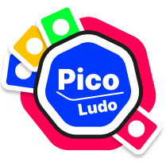

Privacy Policy
This policy explains what information the Pico Ludo game ("the app") collects, why, who it is shared with, and the choices you have. If you have questions, email inbuilt47@gmail.com.
Who we are
Pico Ludo is made by Custard ("we", "us"). Contact: inbuilt47@gmail.com.
Information we collect
| What | Why | Where it's kept |
|---|---|---|
| Player account: an anonymous player ID created automatically; optionally a username and password you choose; your display name. | To give you an account, keep your progress, and show your name in games. | Unity Gaming Services (Unity Technologies) authentication. We never see your password. |
| Game progress: coins, hints, items you unlocked or bought, equipped dice and board styles, whether ads were removed, the date of your last daily bonus. | To keep your progress and purchases across devices and reinstalls. | Unity Cloud Save, linked to your player ID, and a copy on your device. |
| Game statistics: games played and won. | Shown on your profile. | On your device only. |
| Purchases: which product you bought and the store's confirmation. | To give you what you paid for and restore it. | Payments are handled by Google Play; we never receive your payment details. |
| Advertising data (collected by our ad partners): advertising ID and other device identifiers, IP address and approximate location derived from it, device and app information, ad views and clicks, crash and performance data. | To show ads, limit how often you see them, measure them, prevent fraud and, only if you agree, personalise them. | Unity LevelPlay (Unity Technologies) and the ad networks it uses, such as Unity Ads. |
What we don't collect
The app does not access your contacts, photos, camera, microphone or precise (GPS) location. The voice announcer uses your device's built-in text-to-speech; nothing is recorded.
Wi-Fi play: when you host or join a game on the same Wi-Fi, your device exchanges game moves and display names directly with the other players' devices on that network. This information is not sent to us.
Ads and your choice
The app is free and shows ads: optional reward videos, occasional full-screen ads between games, and a banner on menus (never during play). On first launch we ask whether our ad partners may personalise ads using data from your device. You can change this any time in Settings → Personalised ads. If you say no, you still see ads, but they aren't based on your activity, and we tell our partners not to "sell" or "share" your data for advertising (as those terms are used in US state privacy laws). You can also reset or delete your advertising ID in your device settings. Buying Remove ads turns off full-screen and banner ads.
Who we share information with
- Unity Technologies: accounts, Cloud Save, and LevelPlay ad mediation. See Unity's Game Player and App User Privacy Policy.
- Ad networks used through LevelPlay (currently Unity Ads), as described above.
- Google Play: purchases and app distribution. See Google's Privacy Policy.
We don't sell your personal information for money. We may disclose information if the law requires it.
Children
Pico Ludo is intended for people aged 13 and over and is not directed at children under 13. We don't knowingly collect information from children under 13. If you believe a child has used the app, contact us and we will delete their data.
How long we keep information
Account and game-progress data are kept until you delete your account. Information on your device is removed when you delete your account in the app or uninstall it. Ad partners keep data according to their own policies.
Your rights
- Delete your account and data: in the app, go to Profile → Delete account, or see how to request deletion.
- Personalised ads: turn them on or off in Settings.
- Depending on where you live (for example the EU, UK or some US states), you may have rights to access, correct, delete or move your data, and to object to or restrict its use. Email inbuilt47@gmail.com and we'll respond within 30 days. You may also complain to your local data protection authority.
Security
Information sent between the app and our service providers is encrypted in transit (HTTPS). No method of storage or transmission is completely secure, but we use the protections our providers offer.
International transfers
Our service providers may process information in countries other than yours, including the United States, under the safeguards described in their policies.
Changes
We'll update this page when the app's data practices change and revise the effective date above. Significant changes will be shown in the app.